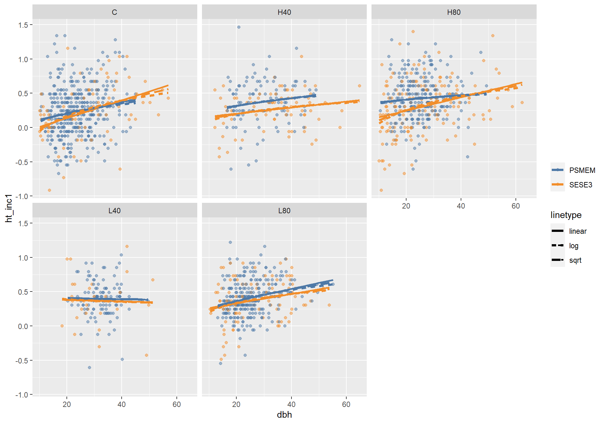

Modeling height growth and predicting missing heights
library(lme4)## Loading required package: Matrix##
## Attaching package: 'Matrix'## The following objects are masked from 'package:tidyr':
##
## expand, pack, unpacklibrary(emmeans)
library(nlme)##
## Attaching package: 'nlme'## The following object is masked from 'package:lme4':
##
## lmList## The following object is masked from 'package:dplyr':
##
## collapselibrary(MuMIn)
library(emmeans)
library(ggpubr)
palette("Tableau 10")Introduction
I need to predict missing heights in 2018 in order to complete other steps of the analysis and provide better summary data. To accomplish this, I will model height increment as a function of the continuous predictor, dbh, as well as a combination of nested groupings: year, treatment, plot, and species. Additionally, height increment response is of interest in it’s own right. While height growth in trees is less responsive to conditions then diameter, it would be important to see whether there is a difference detected between treatments.
Defining trees of interest
First, I’ll define the dataset of interest as only years 2013 and 2018 observations of healthy, non-leaning, unbroken SESE or PSME trees. I’ll also define three other alternative treatment groupings for consideration: thinned/unthinned, H/L/C (thinning type), and 40/80/C (thinning intensity).
test_d <- d_l %>%
filter(
spp %in% c("SESE3", "PSMEM"),
year %in% c("18", "13"),
status == 1,
!get_cond(2, 3, 5),
!is.na(ht_inc) & !is.na(dbh)
) %>%
mutate(
treatment2 = str_extract(treatment, "C|H|L"),
treatment3 = str_extract(treatment, "C|40|80"),
treatment4 = if_else(str_detect(treatment, "C"), "unthinned", "thinned"),
year = factor(year, levels = c("13", "18"), ordered = FALSE)
) %>%
select(starts_with("treatment"), spp, year, tree_id, dbh, ht_inc, plot, x, y)Assessment of linear relationship between dbh and height increment
We are pretty sure that height growth is correlated with diameter, in that larger trees are capable of more height growth than smaller ones. We also think that this relationship is probably not linear. I will take a look at log and square root transformations of dbh for linear prediction of height growth.
m0 <- lm(ht_inc ~ dbh * treatment * spp, data = test_d)
m1 <- update(m0, ~ sqrt(dbh) * treatment * spp)
m2 <- update(m0, ~ log(dbh) * treatment * spp)
test_d %>%
ggplot(aes(x = dbh, y = ht_inc, color = spp)) +
geom_point(aes(color = spp), alpha = .5) +
facet_wrap(vars(treatment)) +
geom_line(aes(y = predict(m0), linetype = "linear"), size = 1) +
geom_line(aes(y = predict(m1), linetype = "sqrt"), size = 1.25) +
geom_line(aes(y = predict(m2), linetype = "log"), size = 1.25) +
scale_color_manual(
values = palette(),
name = "",
breaks = c("PSMEM", "SESE3", "linear", "sqrt", "log"),
)
rm(m0, m1, m2)It doesn’t look like it matters a whole lot with this noisy data. I’m going to use log transformation.
Global Model
The next step is going to specify our likely global model. In general, we want to answer questions about how a given treatment affected growth for each species. There may have also been different responses between years. This will be a mixed model and I want to control for the random effect of plot and tree_id. The global model will include log(dbh) as well as the categories: treatment, species, year, and all their interactions. Resulting in the fixed effects:
ht_inc ~ log(dbh) * treatment * spp * year
Optimal random effects specification
We will determine the optimal random effects structure using the global fixed effects structure. I will select the best of the following random effects structures:
(1 | plot)
(1 | plot) + (1 | tree_id)
(log(dbh) | plot) + (1 | tree_id)I’ll do this using AICc and Restricted Maximum Likelihood Estimation (REML), which I believe is the preferred method when comparing random effects structure, whereas ML is necessary when comparing different fixed effects.
f0 <- formula(ht_inc ~ log(dbh) * treatment * spp * year)
m0 <- gls(f0, data = test_d, method = "REML")
m1 <- lmer(update(f0, ~ . + (1 | plot)), REML = TRUE, data = test_d)
m2 <- update(m1, ~ . + (1 | tree_id))## boundary (singular) fit: see ?isSingularm3 <- update(m2, ~ . + (0 + log(dbh) | plot))## boundary (singular) fit: see ?isSingularAICc(m0, m1, m2, m3)## df AICc
## m0 41 998.2696
## m1 42 969.3265
## m2 43 971.4429
## m3 44 973.5622The optimal random effects structure, includes the random intercept only for plot. I will assume this random effects structure in all further height models.
Choosing a sub-model for fixed effects
The next step is to define a list of potential sub-models for fixed effects to determine the optimal structure. These will be determined for Douglas-fir and redwood separately so I’ll start by splitting the two datasets.
sese_d <- subset(test_d, spp == "SESE3")
psme_d <- subset(test_d, spp == "PSMEM")
fl <- list(
ht_inc ~ log(dbh) + (1 | plot),
ht_inc ~ log(dbh) + year + (1 | plot),
ht_inc ~ log(dbh) + treatment + (1 | plot),
ht_inc ~ log(dbh) + treatment + year + (1 | plot),
ht_inc ~ log(dbh) * treatment + year + (1 | plot),
ht_inc ~ log(dbh) + treatment * year + (1 | plot),
ht_inc ~ log(dbh) * treatment * year + (1 | plot),
ht_inc ~ log(dbh) + treatment2 + (1 | plot),
ht_inc ~ log(dbh) + treatment2 + year + (1 | plot),
ht_inc ~ log(dbh) * treatment2 + year + (1 | plot),
ht_inc ~ log(dbh) + treatment2 * year + (1 | plot),
ht_inc ~ log(dbh) * treatment2 * year + (1 | plot),
ht_inc ~ log(dbh) + treatment3 + (1 | plot),
ht_inc ~ log(dbh) + treatment3 + year + (1 | plot),
ht_inc ~ log(dbh) * treatment3 + year + (1 | plot),
ht_inc ~ log(dbh) + treatment3 * year + (1 | plot),
ht_inc ~ log(dbh) * treatment3 * year + (1 | plot),
ht_inc ~ log(dbh) + treatment4 + (1 | plot),
ht_inc ~ log(dbh) + treatment4 + year + (1 | plot),
ht_inc ~ log(dbh) * treatment4 + year + (1 | plot),
ht_inc ~ log(dbh) + treatment4 * year + (1 | plot),
ht_inc ~ log(dbh) * treatment4 * year + (1 | plot)
)
tibble(models = sapply(fl, deparse)) %>%
rowid_to_column() %>%
kbl(caption = "List of submodels to test for each species") %>%
kable_styling(full_width = FALSE)| rowid | models |
|---|---|
| 1 | ht_inc ~ log(dbh) + (1 | plot) |
| 2 | ht_inc ~ log(dbh) + year + (1 | plot) |
| 3 | ht_inc ~ log(dbh) + treatment + (1 | plot) |
| 4 | ht_inc ~ log(dbh) + treatment + year + (1 | plot) |
| 5 | ht_inc ~ log(dbh) * treatment + year + (1 | plot) |
| 6 | ht_inc ~ log(dbh) + treatment * year + (1 | plot) |
| 7 | ht_inc ~ log(dbh) * treatment * year + (1 | plot) |
| 8 | ht_inc ~ log(dbh) + treatment2 + (1 | plot) |
| 9 | ht_inc ~ log(dbh) + treatment2 + year + (1 | plot) |
| 10 | ht_inc ~ log(dbh) * treatment2 + year + (1 | plot) |
| 11 | ht_inc ~ log(dbh) + treatment2 * year + (1 | plot) |
| 12 | ht_inc ~ log(dbh) * treatment2 * year + (1 | plot) |
| 13 | ht_inc ~ log(dbh) + treatment3 + (1 | plot) |
| 14 | ht_inc ~ log(dbh) + treatment3 + year + (1 | plot) |
| 15 | ht_inc ~ log(dbh) * treatment3 + year + (1 | plot) |
| 16 | ht_inc ~ log(dbh) + treatment3 * year + (1 | plot) |
| 17 | ht_inc ~ log(dbh) * treatment3 * year + (1 | plot) |
| 18 | ht_inc ~ log(dbh) + treatment4 + (1 | plot) |
| 19 | ht_inc ~ log(dbh) + treatment4 + year + (1 | plot) |
| 20 | ht_inc ~ log(dbh) * treatment4 + year + (1 | plot) |
| 21 | ht_inc ~ log(dbh) + treatment4 * year + (1 | plot) |
| 22 | ht_inc ~ log(dbh) * treatment4 * year + (1 | plot) |
I use AICc to assess the fit of each of the submodels with coefficients estimated with ML in order to compare among various fixed effects.
get_aic(fl, data = psme_d) %>%
kbl(caption = "AICS for set of Douglas-fir submodels") %>%
kable_styling(full_width = FALSE)| row | formula | aicc | rmse |
|---|---|---|---|
| 6 | ht_inc ~ log(dbh) + treatment * year + (1 | plot) | 536.3 | 0.301 |
| 16 | ht_inc ~ log(dbh) + treatment3 * year + (1 | plot) | 537.5 | 0.302 |
| 13 | ht_inc ~ log(dbh) + treatment3 + (1 | plot) | 538.6 | 0.303 |
| 14 | ht_inc ~ log(dbh) + treatment3 + year + (1 | plot) | 539.3 | 0.303 |
| 22 | ht_inc ~ log(dbh) * treatment4 * year + (1 | plot) | 539.4 | 0.301 |
| 17 | ht_inc ~ log(dbh) * treatment3 * year + (1 | plot) | 539.7 | 0.301 |
| 21 | ht_inc ~ log(dbh) + treatment4 * year + (1 | plot) | 540.2 | 0.302 |
| 18 | ht_inc ~ log(dbh) + treatment4 + (1 | plot) | 540.7 | 0.303 |
| 12 | ht_inc ~ log(dbh) * treatment2 * year + (1 | plot) | 541.1 | 0.300 |
| 19 | ht_inc ~ log(dbh) + treatment4 + year + (1 | plot) | 541.4 | 0.303 |
| 11 | ht_inc ~ log(dbh) + treatment2 * year + (1 | plot) | 541.8 | 0.302 |
| 3 | ht_inc ~ log(dbh) + treatment + (1 | plot) | 542.6 | 0.303 |
| 8 | ht_inc ~ log(dbh) + treatment2 + (1 | plot) | 542.7 | 0.303 |
| 4 | ht_inc ~ log(dbh) + treatment + year + (1 | plot) | 543.4 | 0.303 |
| 15 | ht_inc ~ log(dbh) * treatment3 + year + (1 | plot) | 543.4 | 0.303 |
| 20 | ht_inc ~ log(dbh) * treatment4 + year + (1 | plot) | 543.4 | 0.303 |
| 9 | ht_inc ~ log(dbh) + treatment2 + year + (1 | plot) | 543.5 | 0.303 |
| 7 | ht_inc ~ log(dbh) * treatment * year + (1 | plot) | 543.9 | 0.299 |
| 10 | ht_inc ~ log(dbh) * treatment2 + year + (1 | plot) | 547.1 | 0.303 |
| 1 | ht_inc ~ log(dbh) + (1 | plot) | 547.9 | 0.303 |
| 2 | ht_inc ~ log(dbh) + year + (1 | plot) | 548.3 | 0.302 |
| 5 | ht_inc ~ log(dbh) * treatment + year + (1 | plot) | 549.6 | 0.302 |
get_aic(fl, data = sese_d) %>%
kbl(caption = "AICS for set of redwood submodels") %>%
kable_styling(full_width = FALSE)| row | formula | aicc | rmse |
|---|---|---|---|
| 22 | ht_inc ~ log(dbh) * treatment4 * year + (1 | plot) | 294.2 | 0.322 |
| 12 | ht_inc ~ log(dbh) * treatment2 * year + (1 | plot) | 296.0 | 0.321 |
| 17 | ht_inc ~ log(dbh) * treatment3 * year + (1 | plot) | 297.3 | 0.324 |
| 3 | ht_inc ~ log(dbh) + treatment + (1 | plot) | 298.5 | 0.332 |
| 13 | ht_inc ~ log(dbh) + treatment3 + (1 | plot) | 298.6 | 0.331 |
| 8 | ht_inc ~ log(dbh) + treatment2 + (1 | plot) | 298.7 | 0.329 |
| 14 | ht_inc ~ log(dbh) + treatment3 + year + (1 | plot) | 298.7 | 0.330 |
| 1 | ht_inc ~ log(dbh) + (1 | plot) | 298.9 | 0.329 |
| 4 | ht_inc ~ log(dbh) + treatment + year + (1 | plot) | 299.0 | 0.331 |
| 2 | ht_inc ~ log(dbh) + year + (1 | plot) | 299.1 | 0.328 |
| 9 | ht_inc ~ log(dbh) + treatment2 + year + (1 | plot) | 299.2 | 0.328 |
| 21 | ht_inc ~ log(dbh) + treatment4 * year + (1 | plot) | 299.8 | 0.327 |
| 15 | ht_inc ~ log(dbh) * treatment3 + year + (1 | plot) | 299.8 | 0.329 |
| 16 | ht_inc ~ log(dbh) + treatment3 * year + (1 | plot) | 299.8 | 0.329 |
| 18 | ht_inc ~ log(dbh) + treatment4 + (1 | plot) | 300.2 | 0.329 |
| 11 | ht_inc ~ log(dbh) + treatment2 * year + (1 | plot) | 300.3 | 0.327 |
| 19 | ht_inc ~ log(dbh) + treatment4 + year + (1 | plot) | 300.5 | 0.328 |
| 7 | ht_inc ~ log(dbh) * treatment * year + (1 | plot) | 301.0 | 0.320 |
| 10 | ht_inc ~ log(dbh) * treatment2 + year + (1 | plot) | 301.3 | 0.327 |
| 20 | ht_inc ~ log(dbh) * treatment4 + year + (1 | plot) | 301.3 | 0.328 |
| 6 | ht_inc ~ log(dbh) + treatment * year + (1 | plot) | 301.3 | 0.328 |
| 5 | ht_inc ~ log(dbh) * treatment + year + (1 | plot) | 303.1 | 0.329 |
fl2 <- c(fl, ht_inc ~ spp * log(dbh) + (1 | plot))
fl3 <- lapply(fl, function(x) update(x, ~ . * spp) %>% update(~ . - (1 | plot:spp)))
get_aic(fl3, data = test_d) %>%
kbl(caption = "AICS for all species ht models") %>%
kable_styling(full_width = FALSE)| row | formula | aicc | rmse |
|---|---|---|---|
| 22 | ht_inc ~ log(dbh) + treatment4 + year + (1 | plot) + spp + log(dbh):treatment4 + log(dbh):year + treatment4:year + log(dbh):spp + treatment4:spp + year:spp + log(dbh):treatment4:year + log(dbh):treatment4:spp + log(dbh):year:spp + treatment4:year:spp + log(dbh):treatment4:year:spp | 832.1 | 0.309 |
| 12 | ht_inc ~ log(dbh) + treatment2 + year + (1 | plot) + spp + log(dbh):treatment2 + log(dbh):year + treatment2:year + log(dbh):spp + treatment2:spp + year:spp + log(dbh):treatment2:year + log(dbh):treatment2:spp + log(dbh):year:spp + treatment2:year:spp + log(dbh):treatment2:year:spp | 833.1 | 0.308 |
| 6 | ht_inc ~ log(dbh) + treatment + year + (1 | plot) + spp + treatment:year + log(dbh):spp + treatment:spp + year:spp + treatment:year:spp | 836.8 | 0.309 |
| 17 | ht_inc ~ log(dbh) + treatment3 + year + (1 | plot) + spp + log(dbh):treatment3 + log(dbh):year + treatment3:year + log(dbh):spp + treatment3:spp + year:spp + log(dbh):treatment3:year + log(dbh):treatment3:spp + log(dbh):year:spp + treatment3:year:spp + log(dbh):treatment3:year:spp | 836.9 | 0.309 |
| 16 | ht_inc ~ log(dbh) + treatment3 + year + (1 | plot) + spp + treatment3:year + log(dbh):spp + treatment3:spp + year:spp + treatment3:year:spp | 838.9 | 0.311 |
| 13 | ht_inc ~ log(dbh) + treatment3 + (1 | plot) + spp + log(dbh):spp + treatment3:spp | 839.1 | 0.312 |
| 21 | ht_inc ~ log(dbh) + treatment4 + year + (1 | plot) + spp + treatment4:year + log(dbh):spp + treatment4:spp + year:spp + treatment4:year:spp | 839.8 | 0.311 |
| 14 | ht_inc ~ log(dbh) + treatment3 + year + (1 | plot) + spp + log(dbh):spp + treatment3:spp + year:spp | 839.9 | 0.312 |
| 11 | ht_inc ~ log(dbh) + treatment2 + year + (1 | plot) + spp + treatment2:year + log(dbh):spp + treatment2:spp + year:spp + treatment2:year:spp | 840.3 | 0.310 |
| 8 | ht_inc ~ log(dbh) + treatment2 + (1 | plot) + spp + log(dbh):spp + treatment2:spp | 840.7 | 0.312 |
| 18 | ht_inc ~ log(dbh) + treatment4 + (1 | plot) + spp + log(dbh):spp + treatment4:spp | 841.2 | 0.312 |
| 7 | ht_inc ~ log(dbh) + treatment + year + (1 | plot) + spp + log(dbh):treatment + log(dbh):year + treatment:year + log(dbh):spp + treatment:spp + year:spp + log(dbh):treatment:year + log(dbh):treatment:spp + log(dbh):year:spp + treatment:year:spp + log(dbh):treatment:year:spp | 841.2 | 0.306 |
| 9 | ht_inc ~ log(dbh) + treatment2 + year + (1 | plot) + spp + log(dbh):spp + treatment2:spp + year:spp | 841.5 | 0.311 |
| 19 | ht_inc ~ log(dbh) + treatment4 + year + (1 | plot) + spp + log(dbh):spp + treatment4:spp + year:spp | 841.9 | 0.312 |
| 3 | ht_inc ~ log(dbh) + treatment + (1 | plot) + spp + log(dbh):spp + treatment:spp | 842.6 | 0.312 |
| 4 | ht_inc ~ log(dbh) + treatment + year + (1 | plot) + spp + log(dbh):spp + treatment:spp + year:spp | 843.5 | 0.311 |
| 15 | ht_inc ~ log(dbh) + treatment3 + year + (1 | plot) + spp + log(dbh):treatment3 + log(dbh):spp + treatment3:spp + year:spp + log(dbh):treatment3:spp | 845.1 | 0.311 |
| 20 | ht_inc ~ log(dbh) + treatment4 + year + (1 | plot) + spp + log(dbh):treatment4 + log(dbh):spp + treatment4:spp + year:spp + log(dbh):treatment4:spp | 845.2 | 0.312 |
| 1 | ht_inc ~ log(dbh) + (1 | plot) + spp + log(dbh):spp | 847.2 | 0.312 |
| 10 | ht_inc ~ log(dbh) + treatment2 + year + (1 | plot) + spp + log(dbh):treatment2 + log(dbh):spp + treatment2:spp + year:spp + log(dbh):treatment2:spp | 847.5 | 0.311 |
| 2 | ht_inc ~ log(dbh) + year + (1 | plot) + spp + log(dbh):spp + year:spp | 847.6 | 0.312 |
| 5 | ht_inc ~ log(dbh) + treatment + year + (1 | plot) + spp + log(dbh):treatment + log(dbh):spp + treatment:spp + year:spp + log(dbh):treatment:spp | 853.0 | 0.311 |
Best model (scrapping above)
While these models are interesting, there is reason to believe that our height measurements are not precise enough to capture the small height differences between treatments (around 3 feet). For this reason, we will default to a simple height increment model with DBH as the only predictor.
I’ll test whether it makes sense to include species
# augment data with fitted, residual cooks distance and leverage
augment1 <- function(dat, mod) {
dat %>% mutate(
fitted = fitted(mod),
resid = resid(mod, type = "pearson", scaled = TRUE),
cooks = cooks.distance(mod),
lev = hatvalues(mod)
)
}ht_inc_mod <- lmer(ht_inc ~ log(dbh) * spp + (1 | plot), data = test_d)
ht_inc_d <- augment1(test_d, ht_inc_mod)
summary(ht_inc_mod)## Linear mixed model fit by REML ['lmerMod']
## Formula: ht_inc ~ log(dbh) * spp + (1 | plot)
## Data: test_d
##
## REML criterion at convergence: 857.3
##
## Scaled residuals:
## Min 1Q Median 3Q Max
## -3.3513 -0.5967 -0.0228 0.6109 3.8429
##
## Random effects:
## Groups Name Variance Std.Dev.
## plot (Intercept) 0.006745 0.08213
## Residual 0.098642 0.31407
## Number of obs: 1542, groups: plot, 20
##
## Fixed effects:
## Estimate Std. Error t value
## (Intercept) -0.26152 0.10862 -2.408
## log(dbh) 0.18605 0.03209 5.798
## sppSESE3 -0.26304 0.15229 -1.727
## log(dbh):sppSESE3 0.05655 0.04552 1.242
##
## Correlation of Fixed Effects:
## (Intr) lg(db) sSESE3
## log(dbh) -0.981
## sppSESE3 -0.668 0.679
## lg(d):SESE3 0.671 -0.689 -0.992Best model estimated means
emmip(ht_inc_mod, spp ~ dbh, at = list(dbh = seq(10, 60, 2))) +
scale_color_manual(values = palette())
emmeans(ht_inc_mod, pairwise ~ spp)## NOTE: Results may be misleading due to involvement in interactions## $emmeans
## spp emmean SE df lower.CL upper.CL
## PSMEM 0.364 0.0212 21.6 0.320 0.408
## SESE3 0.291 0.0244 36.7 0.242 0.341
##
## Degrees-of-freedom method: kenward-roger
## Confidence level used: 0.95
##
## $contrasts
## contrast estimate SE df t.ratio p.value
## PSMEM - SESE3 0.0728 0.0188 1532 3.882 0.0001
##
## Degrees-of-freedom method: kenward-rogerBest model validation
Residual vs fitted
I also plot residual vs the predictor
par(mfrow = c(1, 2))
plot(
resid ~ fitted,
data = ht_inc_d,
pch = 16,
xlab = "fitted values",
ylab = "Scaled residuals",
main = "Residual vs fitted",
col = 2
)
abline(0,0)
plot(
resid ~ log(dbh),
data = ht_inc_d,
xlab = "log(dbh)",
ylab = "Scaled residuals",
main = "Residual vs log(dbh)",
col = 2,
pch = 16
)
abline(0,0)
with(
model.frame(ht_inc_mod),
boxplot(
resid(ht_inc_mod, type = "pearson") ~ spp,
xlab = "by spp",
ylab = "Residuals",
main = "Distribution of residuals by spp"
)
)
Homogeneity of random group residuals
I can check that random group residuals are homogenous
plot(
ht_inc_mod,
resid(., scaled=TRUE) ~ fitted(.)| plot,
abline = 0,
pch = 16,
xlab = "Fitted values",
ylab = "Standardised residuals"
)
Normality of residuals
Checking for normality of residuals. The tails are perhaps a bit fat, I’m not sure if this requires attention or not.
qqnorm(resid(ht_inc_mod, type = "pearson"), pch=16, col = 1, main = "QQplot for pearosn residuals")
qqline(resid(ht_inc_mod, type = "pearson"))
Leverage and Cooks distance
Cooks outliers, defined as > 3 x mean(cooks distance) are colored in red. None of these “outliers” seem like they would disproportionately affect regression.
# Plot leverage against standardised residuals
plot(
resid ~ lev,
data = ht_inc_d,
las = 1,
ylab = "Standardised residuals",
xlab = "Leverage",
col = palette.colors(palette = "tableau10", alpha = .5)[1],
main = "Leverage vs residuals",
pch = 16
)
points(resid ~ lev, data = filter(ht_inc_d, cooks > 3 * mean(cooks)), pch = 16, col =3)
Random effects distribution
The distribution of random effects (plots) should be roughly normal. Here our distribution is skewed, from what I’ve read, this should not be a problem for estimates or their std’s.
hist(as.vector(unlist(ranef(ht_inc_mod)$plot)), col = 1)
Update data with model predictions
Missing heights other species
There are five species that are missing heights. There is not enough data to predict heights of hemlock, so it is left out of the model, redwood, Douglas-fir, alder and spruce were all included in the model. I’m also going to predict missing heights for leaning trees. Leaning trees were not included in fitting the model.
I can only predict heights for trees in year 13 and 18, and only if they have a height in the previous period. Furthermore, there may be issues with predicting heights for broken trees, if their previous height is for their pre-broken state. First, I’ll just predict heights for status 1, unbroken trees
broken_trees <- d_l %>%
filter(
status == 1 & get_cond(2, 3) | status == 31,
is.na(ht),
spp %in% c("ALRU2", "PISI", "SESE3", "PSMEM"),
year %in% c("13", "18")
)
d_l %>%
group_by(tree_id) %>%
filter(tree_id %in% broken_trees$tree_id, year %in% c("08", "13", "18"), get_cond(2,3) == lag(get_cond(2,3)))## # A tibble: 154 x 23
## # Groups: tree_id [77]
## plot treatment tree_id spp h_dist azi year dbh ht cr status
## <chr> <chr> <chr> <chr> <dbl> <dbl> <ord> <dbl> <dbl> <dbl> <int>
## 1 1L40 L40 1L40.3653 PSMEM 14.8 132 08 36.6 21.3 20 1
## 2 1L40 L40 1L40.3653 PSMEM 14.8 132 18 42.7 NA NA 1
## 3 1L40 L40 1L40.3663 SESE3 14.8 246 08 22.1 17.7 35 1
## 4 1L40 L40 1L40.3663 SESE3 14.8 246 13 26.4 20.7 30 1
## 5 1L40 L40 1L40.3669 SESE3 14.1 279 08 33.8 22.6 20 1
## 6 1L40 L40 1L40.3669 SESE3 14.1 279 18 39.1 NA NA 1
## 7 1L80 L80 1L80.3386 SESE3 2.13 2 08 17.3 16.8 15 1
## 8 1L80 L80 1L80.3386 SESE3 2.13 2 18 17.3 NA NA 1
## 9 1L80 L80 1L80.3388 SESE3 2.35 8 08 21.3 18.3 15 1
## 10 1L80 L80 1L80.3388 SESE3 2.35 8 18 22.6 NA NA 1
## # ... with 144 more rows, and 12 more variables: bear <lgl>, rot <lgl>,
## # notes <chr>, cc <int>, cond <chr>, live <lgl>, d_inc <dbl>, ht_inc <dbl>,
## # ba <dbl>, ba_inc <dbl>, x <dbl>, y <dbl>Old Model Selection
Selection
Based on this, I will select model five for Douglas-fir because it is substantially better than the next best model. For redwood, I select model 21 because it has the lowest AIC. I have doubts about whether this model captures any more valuable information than model 1, with log(dbh) only, but I’ll go with it for now.
sese <- lmer(fl[[21]], data = sese_d, REML = TRUE)
psme <- lmer(fl[[5]], data = psme_d, REML = TRUE)
sese_d <- augment1(sese_d, sese)
psme_d <- augment1(psme_d, psme)Estimated marginal means
In both cases, I’m separating results of comparisons by year, because interaction with year was included in the model. If we decide to hold year at its mean effect, then comparisons will likely be different.
First, the model for SESE was fit with interactions between treatment, year, and dbh. I could test at multiple dbh’s if we were interested in a certain range of sizes because the model includes interaction with dbh.
sese_em <- emmeans(sese, ~ dbh * treatment4 * year)
sese_em## dbh treatment4 year emmean SE df lower.CL upper.CL
## 31.7 thinned 13 0.361 0.0313 25.1 0.296 0.425
## 31.7 unthinned 13 0.261 0.0613 29.2 0.136 0.387
## 31.7 thinned 18 0.291 0.0357 38.6 0.219 0.364
## 31.7 unthinned 18 0.338 0.0764 61.8 0.185 0.491
##
## Degrees-of-freedom method: kenward-roger
## Confidence level used: 0.95pairs(sese_em, by = "year")## year = 13:
## contrast estimate SE df
## 31.736874715262 thinned - 31.736874715262 unthinned 0.0995 0.0683 27.3
## t.ratio p.value
## 1.458 0.1563
##
## year = 18:
## contrast estimate SE df
## 31.736874715262 thinned - 31.736874715262 unthinned -0.0466 0.0843 56.4
## t.ratio p.value
## -0.553 0.5826
##
## Degrees-of-freedom method: kenward-rogerNext, PSME was fit with factors (treatment * year) we can do pairwise comparisons, or, alternatively, treatment vs control comparisons. Pairwise comparison does not have enough power to reveal any significant differences, but comparing just to control provides more power and shows some treatments are different than control.
psme_em <- emmeans(psme, ~ treatment * year)
pairs(psme_em, by = "year")## year = 13:
## contrast estimate SE df t.ratio p.value
## C - H40 -0.08713 0.0604 18.1 -1.443 0.6094
## C - H80 -0.17373 0.0539 12.0 -3.222 0.0470
## C - L40 -0.12494 0.0804 55.0 -1.553 0.5331
## C - L80 -0.17332 0.0536 11.8 -3.237 0.0468
## H40 - H80 -0.08660 0.0614 19.2 -1.411 0.6285
## H40 - L40 -0.03782 0.0857 67.0 -0.441 0.9920
## H40 - L80 -0.08619 0.0611 18.9 -1.410 0.6292
## H80 - L40 0.04878 0.0814 57.0 0.599 0.9746
## H80 - L80 0.00041 0.0548 12.8 0.007 1.0000
## L40 - L80 -0.04837 0.0810 56.2 -0.597 0.9749
##
## year = 18:
## contrast estimate SE df t.ratio p.value
## C - H40 -0.08713 0.0604 18.1 -1.443 0.6094
## C - H80 -0.17373 0.0539 12.0 -3.222 0.0470
## C - L40 -0.12494 0.0804 55.0 -1.553 0.5331
## C - L80 -0.17332 0.0536 11.8 -3.237 0.0468
## H40 - H80 -0.08660 0.0614 19.2 -1.411 0.6285
## H40 - L40 -0.03782 0.0857 67.0 -0.441 0.9920
## H40 - L80 -0.08619 0.0611 18.9 -1.410 0.6292
## H80 - L40 0.04878 0.0814 57.0 0.599 0.9746
## H80 - L80 0.00041 0.0548 12.8 0.007 1.0000
## L40 - L80 -0.04837 0.0810 56.2 -0.597 0.9749
##
## Degrees-of-freedom method: kenward-roger
## P value adjustment: tukey method for comparing a family of 5 estimatescontrast(psme_em, "trt.vs.ctrl1", by = "year")## year = 13:
## contrast estimate SE df t.ratio p.value
## H40 - C 0.0871 0.0604 18.1 1.443 0.4290
## H80 - C 0.1737 0.0539 12.0 3.222 0.0248
## L40 - C 0.1249 0.0804 55.0 1.553 0.3503
## L80 - C 0.1733 0.0536 11.8 3.237 0.0247
##
## year = 18:
## contrast estimate SE df t.ratio p.value
## H40 - C 0.0871 0.0604 18.1 1.443 0.4290
## H80 - C 0.1737 0.0539 12.0 3.222 0.0248
## L40 - C 0.1249 0.0804 55.0 1.553 0.3503
## L80 - C 0.1733 0.0536 11.8 3.237 0.0247
##
## Degrees-of-freedom method: kenward-roger
## P value adjustment: dunnettx method for 4 testsA plot of estimated means by treatment and year can reveal patterns in the interactions, the fact that effects change so much between measurement periods is probably due to the noisiness of the data and perhaps also systematic differences between measurement crews. We could ignore year to try to identify a signal for treatment despite the noise. By ignoring year we would be weighting the 2013 data, because less data was taken in 2018.
emmip(psme_em, treatment ~ year) +
scale_color_manual(values = palette()) +
scale_x_discrete(expand = expansion(mult = .2))
emmip(sese_em, treatment4 ~ year) +
scale_color_manual(values = palette()) +
scale_x_discrete(expand = expansion(mult = .2))
The author of emmeans is opposed to the use of compact letter displays (significance letters) on estimated means plots and suggests this plot as an alternative:
pwpp(psme_em, by = "year") +
scale_color_manual(values = palette())
pwpp(sese_em, by = "year") +
scale_color_manual(values = palette()) +
scale_y_discrete(labels = c("unthinned (avg. dbh)", "thinned (av. dbh)")) +
scale_x_log10(breaks = waiver(), expand = expansion(mult = .2))## Scale for 'x' is already present. Adding another scale for 'x', which will
## replace the existing scale.
Here I look at means of predictions and observed values by treatment and year. Predicted means are at the mean dbh for species/year, whereas observed values are at the mean of all observed height increments, this was mostly for me to understand the difference between least squares means (estimated marginal means) and regular marginal means.
bind_rows(psme_d, sese_d) %>%
ggplot(aes(y = ht_inc, x = year, color = treatment, group = treatment)) +
stat_summary(
fun = mean,
geom = "line",
aes(linetype = "observed"),
size = 1.25) +
stat_summary(
data = as_tibble(psme_em),
aes(y = emmean, linetype = "predicted"),
fun = mean, geom = "line",size = 1
) +
facet_wrap(vars(spp)) +
scale_color_manual(values = palette()) +
scale_linetype_manual(
values = c(2, 1),
name = "",
breaks = c("observed", "predicted")
) +
scale_x_discrete(expand = expansion(mult = .2))
Predictions
Here I predict heights for a range of values while holding the random effect of plot at its mean according to our selected models. The model for PSME does not include interactions between dbh and treatment or year, so slopes are parallel. The model for SESE does include interactions with dbh and slopes change dramatically (flip-flop) between years. It seems likely to me that we are either modeling noise, or systematic differences between different crews doing height measurements.
plot_emmeans_models <- function(by_year){
if (by_year == TRUE) {
psme_form <- ~ dbh + treatment * year
sese_form <- ~ dbh * treatment4 * year
facet_vars <- vars(interaction(spp, year, sep = " "))
} else {
psme_form <- ~ dbh + treatment
sese_form <- ~ dbh * treatment4
facet_vars <- vars(spp)
}
bind_rows(
emmeans(
psme,
psme_form,
at = list(dbh = seq(10, 60, 2))
) %>%
as_tibble() %>%
mutate(spp = "PSME"),
emmeans(
sese,
sese_form,
at = list(dbh = seq(10, 60, 2))
) %>%
as_tibble() %>%
rename(treatment = treatment4) %>%
mutate(spp = "SESE")
) %>%
ggplot(aes(x = dbh, y = emmean, group = treatment)) +
geom_line(aes(color = treatment), size = 1) +
scale_color_manual(values = palette()) +
labs(x = "dbh (cm)", y = "Height increment (m)") +
facet_wrap(facet_vars) +
theme_classic2()
}
plot_emmeans_models(by_year = TRUE)
Here are the model predictions if we hold the effect of year at its mean. This makes the model seem a bit more coherent, but when we don’t include the effect of year, there is no difference between treatments for sese, because the difference was mostly to do with the difference between years. This might be a good reason to remove year from the model.
plot_emmeans_models(by_year = FALSE)
Here I plot the differences between each plot, these are averaged over both years and seems to show there is quite a bit of variability in plots.
palette("tableau10")
ggplot(test_d, aes(x = dbh, y = ht_inc)) +
geom_smooth(
aes(linetype = spp, color = str_extract(plot, "\\d")),
method = "lm",
formula = y ~ log(x),
se = FALSE
) +
facet_wrap(vars(treatment)) +
scale_color_manual(values = palette(), name = "plot number")
Validation of selected models
Residual vs fitted
Next I will perform some model validation. I’ll start by looking at residuals vs fitted and residual vs continuous predictor (log(dbh)) and for the Douglas-fir model, the residuals for each combination of the categorical predictors: treatment and year.
par(mfrow = c(2, 2))
plot(
resid ~ fitted,
data = sese_d,
pch = 16,
xlab = "fitted values",
ylab = "Scaled residuals",
main = "Residual vs fitted for SESE",
col = 2
)
abline(0,0)
plot(
resid ~ fitted,
data = psme_d,
pch = 16,
xlab = "fitted values",
ylab = "Scaled residuals",
main = "Residual vs fitted for PSME",
col = 1
)
abline(0,0)
plot(
resid ~ log(dbh),
data = sese_d,
xlab = "log(dbh)",
ylab = "Scaled residuals",
main = "Residual vs log(dbh) for SESE",
col = 2,
pch = 16
)
abline(0,0)
plot(
resid ~ log(dbh),
data = psme_d,
xlab = "log(dbh)",
ylab = "Scaled residuals",
main = "Residual vs log(dbh) for PSME",
col = 1,
pch = 16
)
abline(0,0)
with(
model.frame(psme),
boxplot(
resid(psme, type = "pearson") ~ treatment + year,
xlab = "by treatment and year",
ylab = "Residuals",
main = "Distribution of residuals by treatment and year for PSME"
)
)
Homogeneity of random group residuals
I can check that random group residuals are homogenous
plot(
psme,
resid(., scaled=TRUE) ~ fitted(.)| plot,
abline = 0,
pch = 16,
xlab = "Fitted values",
ylab = "Standardised residuals"
)
Normality of residuals
Checking for normality of residuals. The tails are perhaps a bit fat for PSME. I’m not sure if this requires attention or not.
par(mfrow = c(1, 2))
qqnorm(resid(psme), pch=16, col = 1, main = "QQplot for PSME")
qqline(resid(psme))
qqnorm(resid(sese), pch=16, col = 2, main = "QQplot for SESE")
qqline(resid(sese))
Leverage and Cooks distance
Cooks outliers, defined as > 3 x mean(cooks distance) are colored in red. None of these “outliers” seem like they would disproportionately affect regression.
par(mfrow = c(2, 1))
# Plot leverage against standardised residuals
plot(
resid ~ lev,
data = psme_d,
las = 1,
ylab = "Standardised residuals",
xlab = "Leverage",
col = palette.colors(palette = "tableau10", alpha = .5)[1],
main = "Leverage vs residuals for PSME",
pch = 16
)
points(resid ~ lev, data = filter(psme_d, cooks > 3 * mean(cooks)), pch = 16, col =3)
plot(
resid ~ lev,
data = sese_d,
las = 1,
ylab = "Standardised residuals",
xlab = "Leverage",
col = palette.colors(palette = "tableau10", alpha = .5)[2],
main = "Leverage vs residuals for SESE",
pch = 16
)
points(resid ~ lev, data = filter(sese_d, cooks > 3 * mean(cooks)), pch = 16, col =3)
Random effects distribution
The distribution of random effects (plots) should be roughly normal. Obviously, this is not the case for SESE, I’m not sure of what the implications for this are.
hist(as.vector(unlist(ranef(psme)$plot)), col = 1)
hist(as.vector(unlist(ranef(sese)$plot)), col = 2)
Spatial autocorrelation
Semivariograms for our two selected models, the first set indicates average semivariance within plots. The second set indicates semivariance across all trees. It seems like correlation increases with distance within plots for PSME, this is usually the opposite but may make sense in that at the plot level, larger trees may be farther from each other. For SESE, the reverse is true. This also may be artefacts of noisy data. Either way, it appears that their is not a
sese1 <- lme(ht_inc ~ log(dbh), random = ~ 1 | plot, data = sese_d)
psme1 <- lme(ht_inc ~ log(dbh) + treatment * year, random = ~ 1 | plot, data = psme_d)
plot(Variogram(sese1, form = ~ x + y | plot))
plot(Variogram(psme1, form = ~ x + y | plot))
par(mfrow = c(2, 1))
vp <- geoR::variog(
coords = cbind(psme_d$x, psme_d$y),
data = resid(psme, type = "pearson"),
option="bin",
uvec = 50
)## 'RandomFieldsUtils' will use OMP
## 'RandomFields' will use OMP
## variog: computing omnidirectional variogram
## variog: co-locatted data found, adding one bin at the originplot(vp, col = 1, pch = 16, main = "semivariance across study for psme")
lines(fitted(loess(vp$v ~ vp$u)) ~ vp$u, col = "darkblue")
vs <- geoR::variog(
coords = cbind(sese_d$x, sese_d$y),
data = resid(sese, type = "pearson"),
option="bin",
uvec = 50
)## variog: computing omnidirectional variogram
## variog: co-locatted data found, adding one bin at the originplot(vs, col = 2, pch = 16, main = "semivariance across study for sese")
lines(fitted(loess(vs$v ~ vs$u)) ~ vs$u, col = "darkblue")
Temporal autocorrelation
We are looking at data for 2013 and 2018, year was included in the model for psme but not for sese. I’ll look at an autocorrelation plot
par(mfrow = c(1, 2))
acf(resid(psme, type = "pearson"), lag.max = 4, col = 1)
acf(resid(sese, type = "pearson"), lag.max = 4, col = 2)
I can also look for correlation between the residuals of observations using a correlation test. Observations of the same tree among PSME and SESE are both negatively correlated.
obs_pairs_corr <- function(d) {
tp <- d %>%
group_by(tree_id) %>%
filter(!n() < 2) %>%
summarize(resid1 = nth(resid, 1), resid2 = nth(resid, 2)) %>%
select(resid1, resid2)
cor.test(tp$resid2, tp$resid1)
}
obs_pairs_corr(sese_d)##
## Pearson's product-moment correlation
##
## data: tp$resid2 and tp$resid1
## t = -2.0886, df = 167, p-value = 0.03826
## alternative hypothesis: true correlation is not equal to 0
## 95 percent confidence interval:
## -0.303204995 -0.008799674
## sample estimates:
## cor
## -0.1595478obs_pairs_corr(psme_d)##
## Pearson's product-moment correlation
##
## data: tp$resid2 and tp$resid1
## t = -3.1193, df = 293, p-value = 0.001993
## alternative hypothesis: true correlation is not equal to 0
## 95 percent confidence interval:
## -0.28759063 -0.06644319
## sample estimates:
## cor
## -0.1792807